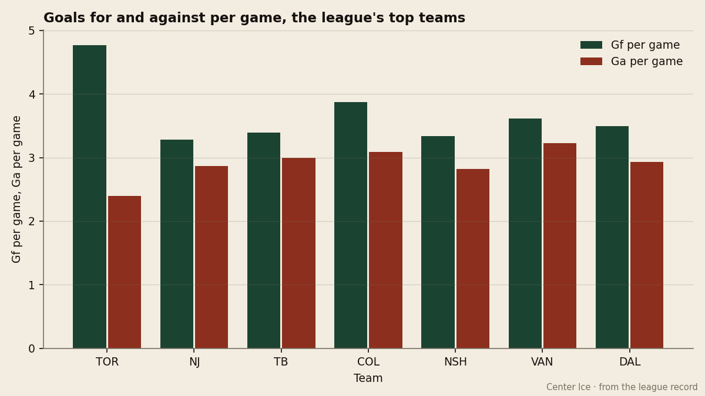
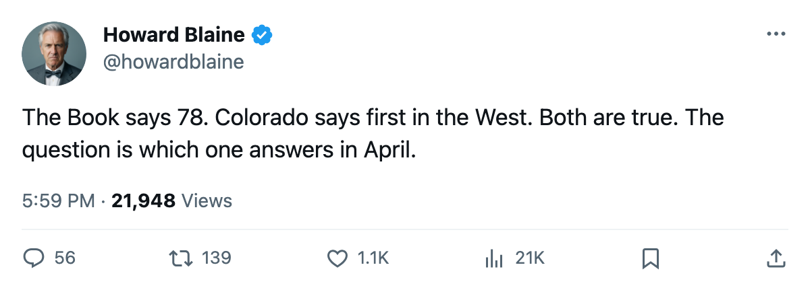
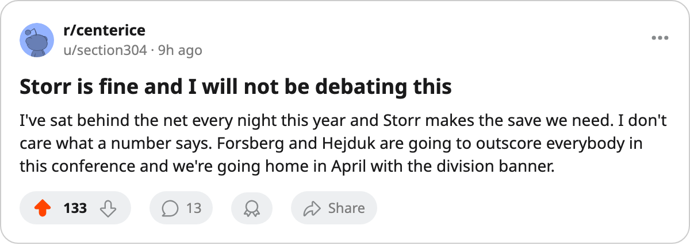

First in the West on a goaltender graded 78: Colorado has the league's most efficient offense and the Bureau's lowest starter
The Avalanche lead the Western Conference by 1 point with 14 games left, their divisional schedule done, and a netminder the Book puts 3 points below the next-lowest starter on a top-6 club
 Howard BlaineSenior writer, The Blaine Rankings · The Hockey Gazette
Howard BlaineSenior writer, The Blaine Rankings · The Hockey Gazette
 Colorado Avalanche leads the Western Conference with 91 points, scores 3.87 a night, and starts the goaltender the Bureau's Book grades lowest of any netminder who has played more than 5 games this season.
Colorado Avalanche leads the Western Conference with 91 points, scores 3.87 a night, and starts the goaltender the Bureau's Book grades lowest of any netminder who has played more than 5 games this season.  Jamie Storr84 carries an overall grade of 78. Among the starting goaltenders on the top 6 clubs in either conference, the next-lowest is
Jamie Storr84 carries an overall grade of 78. Among the starting goaltenders on the top 6 clubs in either conference, the next-lowest is  Tommy Salo85 at
Tommy Salo85 at  Edmonton Oilers, a 3-point gap. The highest is
Edmonton Oilers, a 3-point gap. The highest is  Jean-Sebastien Giguere97 at
Jean-Sebastien Giguere97 at  Mighty Ducks of Anaheim, who grades 97. Storr sits 19 points below him.
Mighty Ducks of Anaheim, who grades 97. Storr sits 19 points below him.
That number has not cost them this far. Storr has 35 wins in 58 starts, a 2.84 GAA against a league average of 2.99, and a save percentage of 0.864. He is not the reason they are first in the conference; their offense is, with 263 goals in 68 games, the most in the Western Conference and second only to  Toronto Maple Leafs in hockey.
Toronto Maple Leafs in hockey.  Peter Forsberg95 has 108 points in 68 games on a 130-point pace,
Peter Forsberg95 has 108 points in 68 games on a 130-point pace,  Milan Hejduk89 has 103 on a 124-point pace, and
Milan Hejduk89 has 103 on a 124-point pace, and  Teemu Selanne87 has 88. Three men with 88 or more points on one line, and the fourth-linemen are not required to score.
Teemu Selanne87 has 88. Three men with 88 or more points on one line, and the fourth-linemen are not required to score.

Colorado's goal differential is plus-53, but the margin comes from one side of the ice. They allow 3.09 a night, fourth-worst among the Western Conference's top 6. Their margin is the offense: 3.87 in, 3.09 out. The gap is 0.78 a game. No other club in the Western Conference's top 6 has a differential that wide on the scoring side alone.  Nashville Predators scores 3.34 and allows 2.82, a gap of 0.52.
Nashville Predators scores 3.34 and allows 2.82, a gap of 0.52.  Vancouver Canucks scores 3.61 and allows 3.23, a gap of 0.38. Colorado wins because it outscores opponents, not because it prevents.
Vancouver Canucks scores 3.61 and allows 3.23, a gap of 0.38. Colorado wins because it outscores opponents, not because it prevents.
The divisional schedule is done, and it was the Northwest
Colorado's 20 games inside the Northwest Division are complete. They finished that slate at 12-1-5-2 (12 regulation wins, 1 overtime win, 5 regulation losses, 2 overtime losses), scoring 88 and allowing 66. They went 4-0-0 (+1 OT) against  Calgary Flames and 4-1-0 against
Calgary Flames and 4-1-0 against  Minnesota Wild, but 1-2-2 against Edmonton Oilers and 2-3-0 against Vancouver Canucks. The two clubs they lost most to inside the division are the two now 1 point behind them in the conference table.
Minnesota Wild, but 1-2-2 against Edmonton Oilers and 2-3-0 against Vancouver Canucks. The two clubs they lost most to inside the division are the two now 1 point behind them in the conference table.
Their 14 remaining games are all non-divisional, which means no more Vancouver Canucks and no more Edmonton Oilers. The schedule from here includes  Columbus Blue Jackets twice,
Columbus Blue Jackets twice,  Detroit Red Wings once,
Detroit Red Wings once,  Washington Capitals once, and nine other clubs. Whether that is favorable or not depends on how you weight the Columbus defensive construction that this desk examined on 2005-03-05.
Washington Capitals once, and nine other clubs. Whether that is favorable or not depends on how you weight the Columbus defensive construction that this desk examined on 2005-03-05.
The Campbell Bowl is 1 point wide. Colorado has 91 from 68 games with 14 left, a ceiling of 119. Nashville Predators has 90 from 67 with 15 left, a ceiling of 120. Vancouver Canucks has 90 from 69 with 13 left, a ceiling of 116. Nashville can still pass Colorado; Vancouver cannot. The Presidents' Trophy is not in reach: Toronto Maple Leafs has 112 from 70 with 12 left, a ceiling of 136, and 40 points ahead of the eighth-place club in the East.
| Club | GP | PTS | Left | Max |
|---|---|---|---|---|
| COL | 68 | 91 | 14 | 119 |
| NSH | 67 | 90 | 15 | 120 |
| VAN | 69 | 90 | 13 | 116 |
| DAL | 69 | 89 | 13 | 115 |
| EDM | 69 | 88 | 13 | 114 |
The payroll says they can afford the question
Colorado pays $71.56M, the third-highest payroll in hockey, and converts it at $0.79M per point, which is the fifth-best rate in the league. Their revenue is $82.66M, their profit $15.77M, and they draw 16,590 a night. The club can carry a goaltender graded 78 because the forwards pay for the mistakes.
But the grade says something the counting stats do not. A 78 in the Book means the Bureau believes Storr's underlying qualities, his rebound control, his positioning, his play behind screens, fall short of what an average starting goaltender brings. His 0.864 save percentage is the lowest of any starter on a top-6 club. Brodeur is 0.878, Giguere 0.879, Khabibulin 0.875, Turco 0.872. Storr's 0.864 is closer to the league's bottom quartile than its top.
In a 7-game series, the gap between 0.864 and 0.879 is the difference between a first-round exit and a second-round series. That is the arithmetic Colorado has not yet had to answer. They went 24 games last spring, 13-8, run 4, behind only Toronto Maple Leafs's 14-4 in the finals, so the question has been live for a year.
What the Bureau's Development Index says about Storr
Storr is 30 years old, drafted 7th overall in 1994, and his form reads neutral. The Index has him at base, neither improving nor declining. He is not a project, and he is not getting better. The 78 is not a young goaltender who will find his game by April; it is a man whose game is what the number says it is, and the Avalanche have built a 91-point season around it.
The 14 games remaining will not resolve the question; only April does. What the next two weeks will settle is the Campbell Bowl, and that depends on whether Forsberg (89 overall, 108 points, 20.9 minutes a night) and Hejduk (83 overall, 103 points) keep producing at their current rates. At their current pace, Colorado has 22 points more to find in 14 games. Nashville needs 20 from 15, Vancouver 16 from 13. The tightest arithmetic belongs to the club with the lowest graded goaltender, which is also the club with the most goals left to score.
I log this: Colorado finishes 1st in the Western Conference. The offense carries the goaltender through 14 more games. If it does not, the gap between $0.79M per point and a first-round exit is the one the 78 is telling them about.

